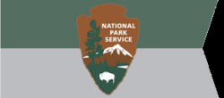

Math 8107: Mathematical Modeling for Science, Engineering, and Industry
Course Instructors (current and past)
Course Description
This course is quite different from the typical mathematics course. Participating
students work in groups on projects that arise in industry, engineering, or in
other disciplines of science. In addition to being advised by the course
instructors, in all projects an external partner is present. The problems are
formulated in non-mathematical language, and the final results need to be
formulated in a language accessible to the external partner. This means in
particular that the mathematical and computational methods must be selected or
created by the students themselves.
Course Goals
Students learn modeling by doing. On the way, they train a wide variety of
skills, such as creative modeling, literature and internet research, group
discussions, applied analysis, scientific programming, and presentation skills.
Each student will be a master of his project, and in addition understands and
learns about the other students' projects.
Grading
The course grading is based on the weekly presentations, the project reports,
and on class participation. The are no exams. More than in traditional lectures,
the success of the project research depends on the students' own creative work.
Why Should I Take This Course?
The active process of modeling is a crucial component of research in applied
mathematics and related fields. Yet, in traditional lectures it is rarely
taught. In this course, students receive extensive advising and mentoring
in modeling, active research, and interactions with an external partner.
Since the unique experience of this course grows with the diversity of
student backgrounds, students from pure mathematics, as well as other
fields of science and engineering are highly encouraged to contact the
instructors about this course.
Projects and Partners
Spring 2022
Linden Dale Farms,
Lancaster County, PA, USA,
produces various fresh and aged cheeses, goat milk yogurt, bottled milk, as well as pasture-raised goat meat.
Project: Optimizing the Stretchability of Goat Milk Mozzarella Cheese
|
|
Hsieh Lab, Temple University, Philadelphia, PA, USA,
seeks to understand how animals respond to and manipulate naturally unstable and unpredictable environments to facilitate their daily locomotion.
Project: Understanding the Stability of Running Lizards
|
|
Spring 2018
Amber Grain Bakery,
Collingswood, NJ, USA,
a "back to basics" neighborhood bakery with artisan breads baked like in the Old World.
Project: Optimizing sour dough feeding schedules
|
|
Merck & Co. (MSD outside of the US and Canada), Kenilworth, NJ, USA,
is one of the largest pharmaceutical companies in the world.
Project: Best injection site for intradermal medicine
|
|
Fall 2013
Delaware
Valley Regional Planning Commission (DVRPC),
Philadelphia, PA, USA,
is the metropolitan planning organization repsonsible for
transportation and regional planning in the greater Philadelphia area.
In order to decide on the allocation of funds, DVRPC runs large simulations
of the transportation in Philadelphia and adjacent counties in PA and NJ,
enabling predidictions of the travel demand over the next decades.
A crucial component of these simulations are models for the
distribution of trips that residents and employees in the metro area take.
Project: Destination choice models in travel demand forecasting
|
|
U.S. National Park Service.
Marble and granite monuments (from the Washington Monument down to
historic grave stones) are affected by lichens and biofilms.
Fundamental question for the preservation of the national heritage are:
Are lichens harmful to the stone? Or could they possibly help preserve the
stone by protecting it from acid rain? Could the cleaning be more harmful
to the stone than the presence of biofilms and lichens?
Project: Effect of lichens and biofilms on marble and granite monuments
|

|
Fall 2011
Elixr Coffee,
Philadelphia, PA, USA, is the coffee place with the best cappuccino
in the western hemisphere. For them, the creation of a perfect
cappuccino foam is an aspect of pride; and also of great interest
to be understood from a scientific perspective.
Project: Stability of cappuccino foams
|
|
Hsieh Lab, Temple University.
Prof. Tonia Hsieh and her postdoctoral researchers and students study the
locomotion of lizards, cockroaches, and other animals. The creation and
study of mathematical models is of crucial importance for the understanding
of the underlying dynamics of locomotion.
Project: Modeling inverted cockroach locomotion
|
|
Spring 2010
Gamry Instruments,
Warminster, PA, USA, is a company that designs and manufactures electrochemical
instruments, in particular impedance-scanning quartz crystal microbalance
systems.
Project: Efficient impedance measurements at low frequency
|
|
Meteomedia AG
is one of the leading weather services in Europe, with subsidiaries in
Germany, Switzerland, Canada and the USA. One of their products is weather
forecast for television. Meteomedia produces weather reports for the German
state TV broadcaster ARD and numerous other TV and radio stations in Germany.
Project: The automatic detection of weather fronts from forecast data
|

|
Photos
|
|
|
The unveiling of the 2011 cappuccino foam project poster at Elixr.
|
| |
|
|
|
Members of the 2011 cockroach project team; with two cockroaches.
|
Links